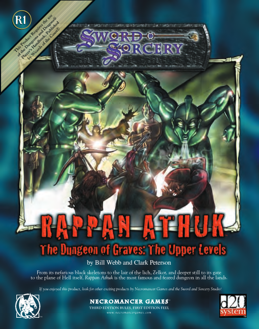

Ok. I wrote a (relatively) brief review of the 3E Rappan Athuk adventure modules, and I would like to go through to document my experiences with it, piece by piece. Linking those two levels of depth, this is going to be a longer, more DM-specific overview of the modules. I'll talk a bit more about the goals and structures of the dungeon, and what it's like to run it. Basically, what I would have found helpful to learn from another DM when I was deciding whether to run this module.
So, as stated before, Rappan Athuk is a megadungeon, which here means a massively interconnected web of sections of the Underdark that the players can explore more or less at will.  Of course, if they push forward into the deeper levels before they're powerful enough, they'll be killed, but they can try it if they want. A megadungeon is a bit of an odd, ambitious project; the goal is to provide a full campaign, spanning many power levels of the PCs, all in the same contained space. As such, there's not very many of them. Castle Greyhawk, the setting of Gygax's own original D&D game, is an example, as is Faerun's Undermountain. As suits the dungeon environment, they're focused on traps and combat more than on other aspects of roleplaying.
That, as I repeatedly stressed in the short review, immediately constrains which groups will be interested in Rappan Athuk. There's some fun and occasionally surprising mix-ups to be had, but broadly speaking the only thing going on here is a dungeon crawl. Kick the door down, kill the monsters, steal the treasure, repeat. You're still reading, so let's assume you're on board.